04Scenarios & worlds
Five worlds. Each adaptive (v2) world is a single continuous ~37 m passage with three staged bands — easy (0–12 m), medium (12–24 m), hard (24–37 m) — where harder stages combine mechanisms rather than merely shrinking gaps. Sensor noise and latency ramp with the band. Every world is shown below as a layout overview, a third-person tracking view, and the onboard first-person view.
Bridge navigation
bridge_navigationA bridge-support corridor of pylons, beams and deck sections over water. Offset barriers and U-shaped obstructions force the safe route to initially increase distance to the target (the bridge-support detour); a blocked span creates an observable dead end requiring retreat; an occluded service junction is only assessable from a safe viewing position. The grey-blue steel theme makes clearance judgments against narrow beams the dominant challenge.
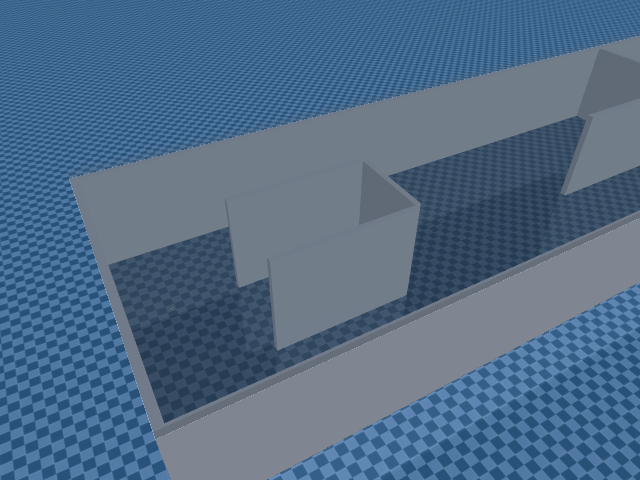
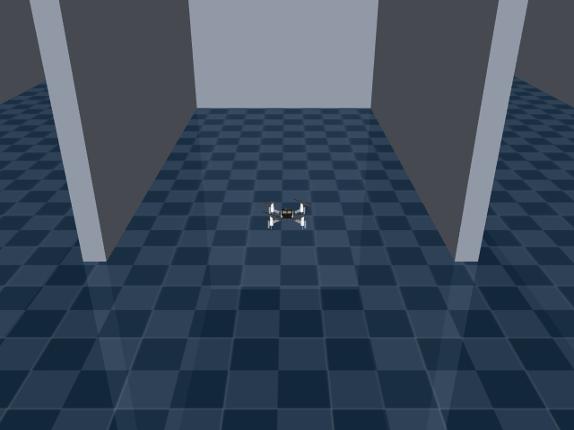
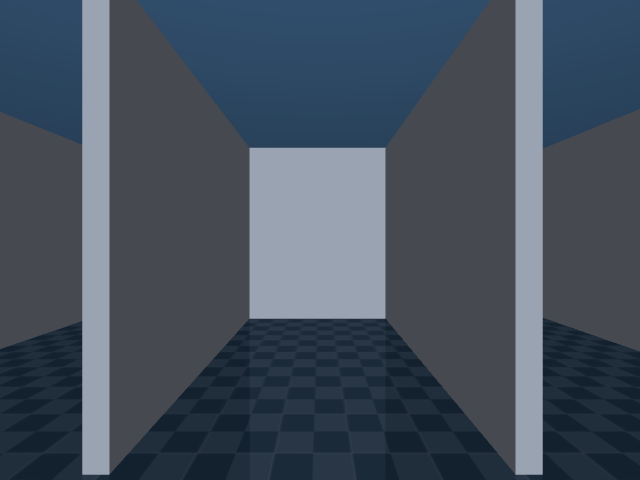
Factory navigation
factory_navigationAn indoor plant of walls, doorways, machines, chimneys and a silo. The narrowest ceiling of the suite compresses vertical clearance; a blocked aisle forms the canonical memory/recovery dead end (retreat and take the alternative branch), while machine rows occlude junctions that must be sensed before commitment. The orange-brown industrial theme stresses tight doorway threading.
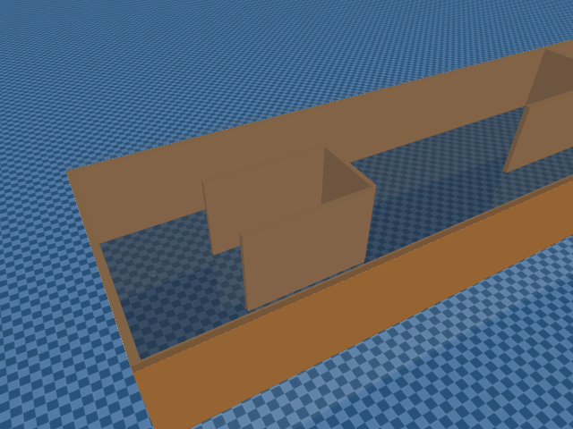
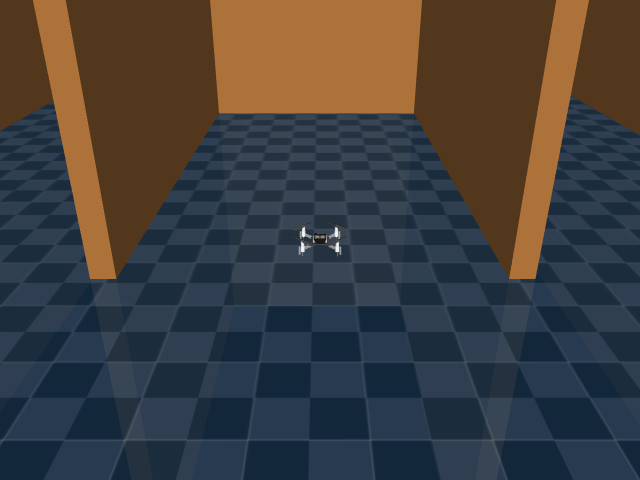
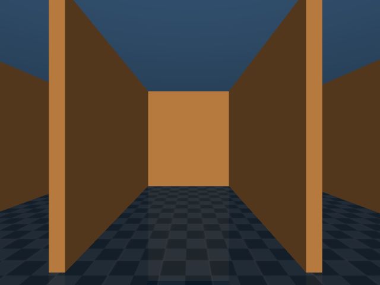
Powerline inspection
powerline_inspectionA transmission-corridor inspection route between pylons and conductor spans. The widest and tallest envelope permits longer standoff viewing positions, but inspection viewpoints demand approaching occluded junctions from a safe vantage before committing — rotation alone is not success. The green utility theme couples active sensing with long-horizon viewpoint ordering.
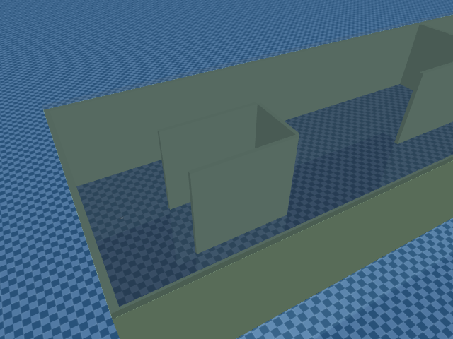
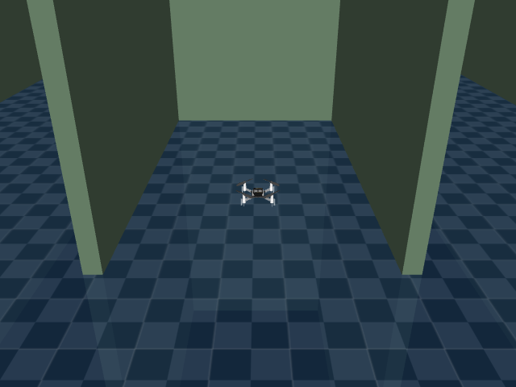
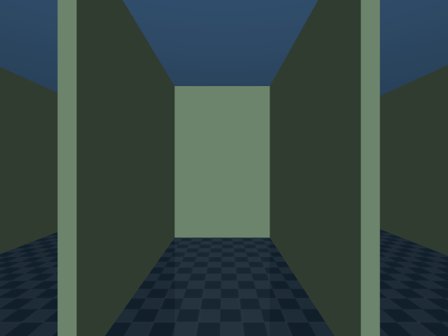
Disaster response
disaster_responseA rubble-strewn response corridor with collapsed spans and blocked passages. Debris baffles create detours whose safe mouth is offset from the direct line; a capped branch is an observable dead end; occluders hide the viable gap until the drone moves to a reveal point. The brown rubble theme is the suite’s harshest combination of all three mechanisms and the strongest test of recovery under partial observability.
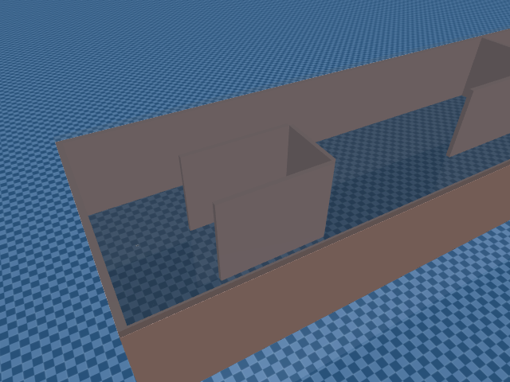
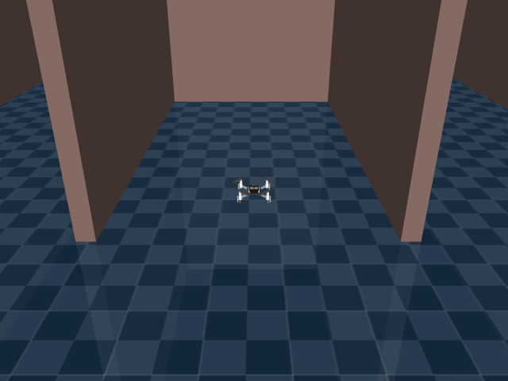
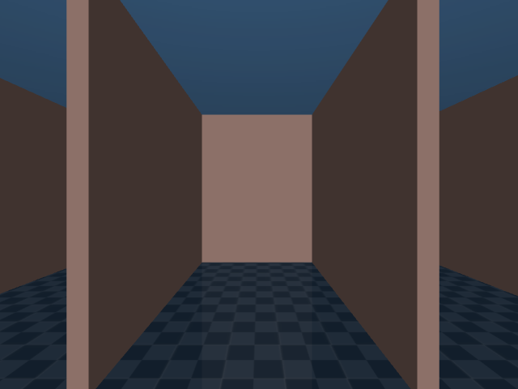
Racing course (auxiliary)
racing_courseThe auxiliary gate-and-pole course reused from the crazyflow-based lsy_drone_racing benchmark. Colorful rectangular gates must be crossed in order; it provides the sim-to-real visual anchor (below) and a fast, well-understood sanity task distinct from the adaptive navigation suite.
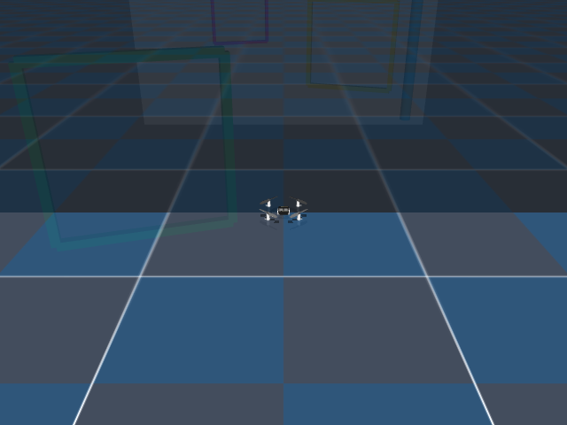

Capability targets & evaluator-only decision regions
| Capability | World mechanism | Event metric (evaluator-only) |
|---|---|---|
| Long-horizon decisions | Offset barriers / U-shaped obstructions where the safe route initially increases distance to target. | Safe detour completion; necessary retreat vs. wandering. |
| Memory & recovery | Observable dead ends and branching routes requiring retreat and an alternative. | Recovery to a viable branch; repeated entry into an observed dead end. |
| Active sensing | Occluded junction assessable by yawing or moving to a safe viewing position. | Visibility before branch commitment; subsequent safe passage (rotation alone is not success). |
| Unfamiliar compositions | Held-out orderings of the three mechanisms (five compositions). | Generalization across composition, not layout memorization. |